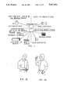
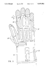

Talking Glove
A glove that translated American Sign Language fingerspelling into spoken words in real time

Overview
The Talking Glove was a self-contained, portable communication system that translated American Sign Language fingerspelling into synthetic speech in real time. Developed by James Kramer under Prof. Larry Leifer at Stanford's Center for Design Research, the system used an instrumented glove with 14 custom strain-gauge flex sensors sewn into pockets over each finger joint. A Motorola 68HC11 microcontroller sampled joint-angle data and fed it to a host computer running Kramer's 'beacon' recognition algorithm, which matched hand configurations to letters in a 14-dimensional hand-state space. When the user formed a special 'say it' handshape, a DECtalk speech synthesizer spoke the assembled word through a miniature pendant speaker worn under the shirt.
The glove communicated bidirectionally: an infrared-linked pocket keyboard let hearing interlocutors type replies, which appeared on a Seiko LCD wrist display for sighted deaf users or on a refreshable mechanical braille display for deaf-blind users. An optional IntroVoice speech recognition system allowed hearing people to speak responses in structured environments. Kramer's strain-gauge sensor design was a key technical advance — unlike the VPL DataGlove's nonlinear fiber-optic sensors, these produced linear output proportional to bend angle regardless of bend radius, making them far more reliable for precise gesture recognition.
The Talking Glove's commercial legacy is extraordinary. Kramer founded Virtual Technologies, Inc. in 1990 to commercialize the technology as the CyberGlove, which became the dominant hand-input device for VR research and industrial simulation for over two decades. Virtual Technologies was acquired by Immersion Corporation in 2000 for its haptic patent portfolio — patents that Immersion later leveraged in multimillion-dollar settlements with Microsoft and Sony over game controller vibration technology. The finger-joint strain-gauge sensor design lives on in CyberGlove Systems' products today.
Deep dive
The problem was stark: deaf, deaf-blind, and non-vocal individuals faced profound communication barriers in everyday face-to-face situations. Interpreters were expensive, notewriting was awkward while standing, and TDD devices were impractical for spontaneous interaction in stores or restaurants. James Kramer, a 1988 Hertz Fellow pursuing his PhD in Electrical Engineering, undertook the project under Prof. Larry Leifer at Stanford's Center for Design Research. The work connected to the broader efforts of Stanford's Rehabilitation R&D Center at the Palo Alto VA Hospital, which had also developed 'Ralph' — a computer-controlled electromechanical hand that could fingerspell into a deaf-blind person's palm. While Ralph was the output side, the Talking Glove was the input side. Together they formed a complete expressive/receptive communication system. The Stanford Daily covered the project as early as November 1988.
The glove used 14 strain-gauge flex sensors — each comprising two 120-ohm Constantan foil gauges mounted back-to-back on a 1-mil polyimide backing — sewn into guiding pockets over each major finger joint. The back-to-back mounting provided temperature compensation and doubled the signal. A multiplexed Wheatstone bridge circuit, an AD7506 analog multiplexer, and an AD624 instrumentation amplifier conditioned the signals before digitization. The digitized values defined a 14-dimensional hand-state vector. Kramer's 'beacon' recognition algorithm placed stored 'beacon' points for each letter in this 14-dimensional space. When hand-state velocity dropped (indicating a held handshape), the algorithm found the nearest beacon using an optimized least-squares search — prioritizing previously-close beacons and terminating distance calculations early. A 'recognition ball' (inner hypersphere) triggered letter registration; a larger 'hysteresis ball' prevented accidental repeat recognition. After each word was spoken, beacon positions adapted to the user's signing signature. The system ran on a Motorola 68HC11 microcontroller with a DECtalk speech synthesizer, achieving practical fingerspelling speeds.
Kramer founded Virtual Technologies, Inc. in 1990 to commercialize the instrumented glove as the CyberGlove — an 18- or 22-sensor device paired with VirtualHand software. In 1995, VTi released GesturePlus, a $3,500 fingerspelling recognition package. The 1997 CyberGrasp force-feedback glove and CyberSuit full-body mocap suit followed. Immersion Corporation acquired Virtual Technologies in 2000 for approximately $1 million, obtaining a haptic patent portfolio that generated multimillion-dollar settlements from Microsoft (2003) and Sony (2007) over game controller vibration. Immersion divested the CyberGlove business in 2009, creating CyberGlove Systems LLC, which continues to sell the products today.
The Talking Glove pioneered multiple fields simultaneously: it was the first practical fingerspelling-to-speech translator for deaf communication, one of the earliest integrated wearable computer systems (combining sensors, microcontrollers, wireless communication, speech synthesis, LCD, braille, and voice recognition in a body-worn form factor), and the origin of the CyberGlove's strain-gauge sensor technology that dominated VR hand input for decades. US Patent 5,047,952 (filed 1988, granted 1991) has been cited by hundreds of subsequent patents in wearable computing and gesture recognition.
Team & pioneers
- James F. Kramer. Lead inventor, PhD student, Hertz Fellow. Founder of Virtual Technologies, Inc.
- Prof. Larry Leifer. Doctoral advisor. Founding director of Stanford Center for Design Research
- Peter Lindener. Co-inventor on US Patent 5,047,952
- William R. George. Co-inventor on US Patent 5,047,952
- David L. Jaffe. Investigator at Stanford RR&D Center; worked on complementary 'Ralph' fingerspelling hand
Media

Sources
- US Patent 5,047,952 — Communication System for Deaf, Deaf-Blind, or Non-Vocal Individuals
- Stanford RR&D Center — Kramer's Talking Glove Project Page
- Kramer & Leifer, 'The Talking Glove,' ACM SIGCAPH Computers and the Physically Handicapped, Issue 43, 1989
- Wired Magazine — 'Gropethink,' interview with James Kramer, October 1998
- Sturman & Zeltzer, 'A Survey of Glove-Based Input,' IEEE CG&A, 1994
- CyberGlove Systems LLC — About Us
- Hertz Foundation — James Kramer Fellow Profile